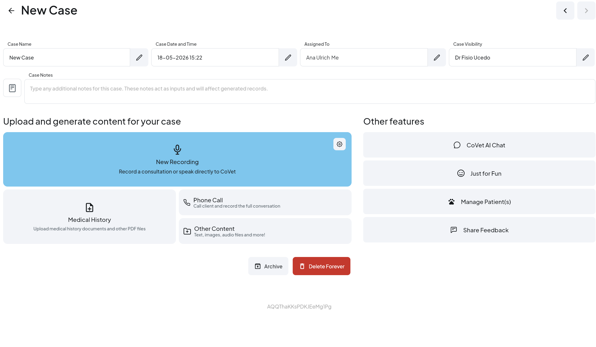
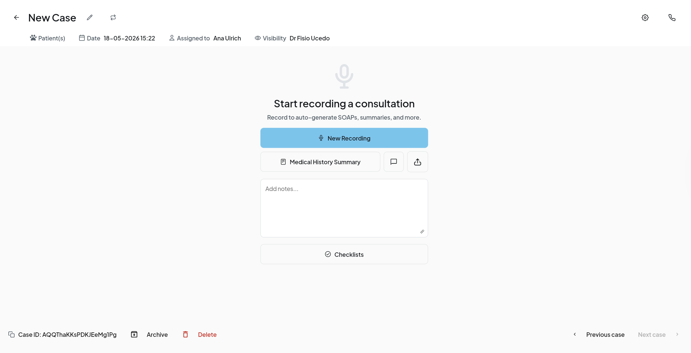

The new case page is leaner and recording-first. The same actions are still here, just relocated. Match the numbers between the two screens to find what you're looking for.


Tip: the page is now organized around the one thing you do most — recording a consult. Everything else (case meta, file actions, navigation) has been pushed to the edges to keep the recording target in the center of your eye.